Oligonucleotide Synthesis
with notes on purification
This document has been prepared by Mitch Halloran.
It currently has three sections:
Notes on the PolyGen 10 synthesizer were mostly copied from the PolyGen user manual, but a lot of the text has been re-worded and generally summarized. However, there is a lot of detail in the document as well.
Notes on the Transgenomic WAVE System are taken from the Transgenomic user manual and the Hitachi module manuals
This section explains the chemistry principles involved in standard oligonucleotide synthesis, as well as what methods can be used to purify the synthesized products. Purification can be done in several ways, including liquid chromatography, and especially high performance liquid chromatography (HPLC).
The DNA bases are mixed in liquid phase with a solid phase, to which the base will be added in a cyclic fashion and attached to the solid phase by a chemical reaction with functional groups first on the solid phase itself, and later with addition of a nucleotide monomer. Attachment to the solid phase allows the washing away of reagents and byproducts at each step of the cycle extending the polymer.
The solid phase used for oligonucleotide synthesis in automated synthesizers is typically controlled pore glass (CPG). Note that CPG is a registered trademark of Millipore.
CPG is made by melting borosilicate glass such that the borates and the silicates are separated. The silicate phase is then extracted into a liquid medium that involves a sol-gel transformation used to control pore size. Pore sizes can vary from 75 to 3000 Å (7.5 to 300 nm).
For oligo synthesis, CPG with pore sizes of 500 and 1000 Å is typically used. The size of the CPG particle itself is usually about 100 µm or more (the finest grain of sand). These particles are practical for analytical and batch work. The glass surface is then chemically altered to add functional groups such as aminoethyl chains (or perhaps longer alkyl chain when necessary). It is the amino group on the end that is then reactive for adding the first oligo base. Generally, the CPG particles for oligo synthesis already have the 3′ base added to it, because the chemical reactions for linking the base to the CPG are not done by the typical automated synthesizer (or it requires special programming) and the demand for this modified CPG particle is high, so it is present as a convenience for rapid product synthesis. Therefore it is possible to purchase CPG-A, CPG-C, CPG-G, and CPG-T either in bulk or packed into a column based on the quantity to be synthesized, usually from 25 to 500 nmol, and even into the micromole range.
Polystyrene with high cross-linking or as copolymers with polyethylene glycol is another type of solid support that might be used as well. It may be used particularly with the synthesis of very long oligonucleotides.
Chemical de novo DNA synthesis involves the repetition of four chemical reactions, only one of which actually adds a base to the chain. The other steps effectively prepare for the addition of a base, remove chains from the synthetic
Synthesis is 3′→5′. The addition of bases in the biological synthesis of DNA and RNA oligonucleotides is well known to occur in the 5′→3′ direction, that is, in the 3′→5′ direction. But the chemical synthesis occurs in the opposite direction. This is because of the convenience of how the phosphate diester bonds that form the DNA or RNA polymer are modified at each step.
The steps of synthesis are:
All of these steps are detailed and illustrated in the sections below.
The four bases used in the chemical synthesis are shown below. The atoms and bonds that will be part of the finished nucleotide are colored white. The important chemically reactive groups are bonded with protecting groups that prevent reaction until the step when they are deprotected, either by a reaction that removes a single or multiple protecting groups. The 5′-OH group is protected with a cyan-colored trityl group. The 3′- phosphorus ester is protected by a magenta-colored 2-cyanoethyl group and a lime-colored diisopropyl amine group. These protecting groups, one on the 5′ hydroxyl, and two on the phosphate ester, are common to all the bases used in these chemical reactions. Note that R1, R2, and R3 on bases G, C, and T correspond to the groups on base A shown in the figure below. Bases A and C have an additional protecting group on the base moiety: the free primary amine must be protected as a red-colored benzoic acid group. Base G primary amine must be protected as an amide, but it is a red-colored isobutyric acid group rather than benzoic acid group. The rings of base T have no reactive primary amine, so it requires no protecting group.
At least two or three decades have been required for organic chemists to develop and revise (improve) what the protecting groups are and how they would synthesized and removed.
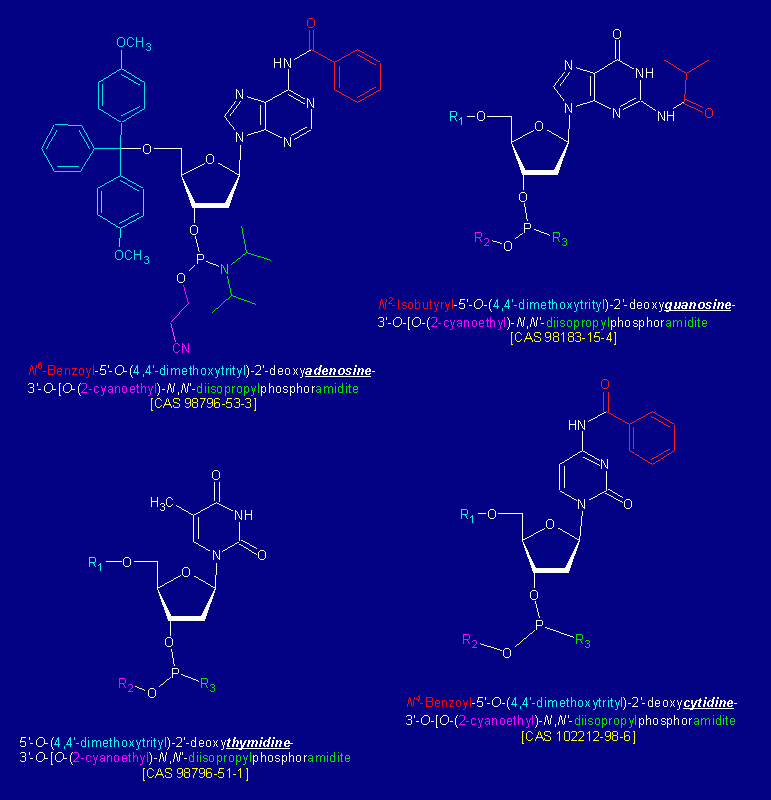
The chemical synthesis starts with acquiring (purchasing) the solid phase support (controlled pore glass particles) with the 3′ base already bonded (covalently) to the glass particle. Before these were commercially available, several organic reactions were required to activate the glass particle, attach linking molecules to them, and then attach the first (3′) base. The glass particle is composed of silica being a particle with a particular pore size. It is chemically activated to take a linear alkyl amine. The amine group will then be bonded to the ligand of interest. In this case, a succinyl ester of the base is formed. It will have the trityl protecting group on the 5′ hydroxyl. If the base needs a protecting group, it will also be present. It should be noted that there is no need for a 3′ phosphotriester in this first base, as is present with the bases that are added.
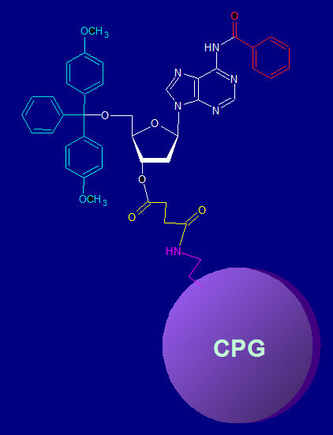
The first step in the 4-step cycle is to remove the trityl protecting group to create a 5′ hydroxyl on the deoxyribonucleotide. This is done with a small amount of a trichloroacetic acid catalyst (3%) in dichloromethane. The dimethoxyltrityl leaving group will form a stable carbocation on the methyl group because the three aromatic rings contribute significant electron density via pi electron resonance and other ways of delocalizing the positive charge. The dimethoxytrityl cation has a very deep orange color in fact, and the completion of the reaction can be monitored.
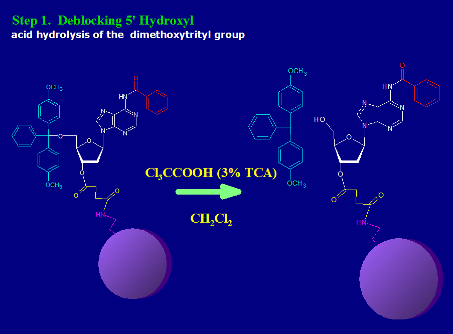
It is step 2 that actually covalently extends the oligonucleotide with a new base. Step 1 made available the hydroxyl group on the 5′-carbon of the deoxyribose, and now step 2 brings the new base in contact with the forming oligo on the solid phase support.
The base cannot just be added however to the solution. It is not in an activated form, so an activator must be mixed in (co-addition) which targets the diisopropylamine group bound to the phosphorus atom on the 3′-carbon.
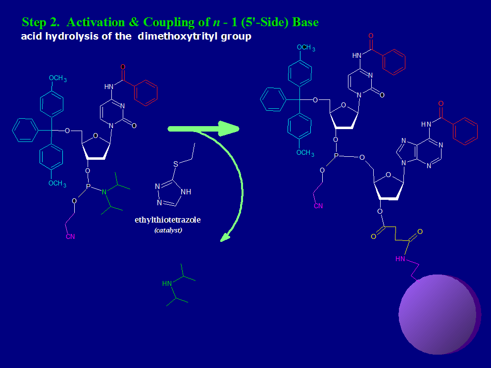
The newly added base has been activated and then coupled, in 3′→5′
fashion. The problem is that this reaction is not 100% efficient. There will be
some molecules that still have a 5′-hydroxyl end that did not get coupled
to an activated base. Perhaps as little as 1-2% of molecules may be in this
state. It will be necessary to cap
these molecules so that they do not
create problems in the next steps of the cycles. Capping involves doing
two things:
For example, suppose you are creating a 15-mer oligo with the sequence 5′-ATTCAAGCGATTCTG-3′. If there is no capping, and if there is failure on each cycle, it is possible to end up with a 14-mer that is a mixture of molecules where each base was missing at each of the 14 cycles used in making the 15-mer:
The first oligo is the molecule that results from a failed couple at cycle 1. The second oligo is the molecule that results from a failed couple at cycle 2. The nth oligo is the molecule that results from a failed couple at cycle n.
However if capping is done, those molecules above never elongate and the molecules generated will be:
Capping is done (as shown below) by using an anhydride (4-tert-butylphenoxyacetic anhydride) to esterify the 5′-hydroxyl in the molecules that failed to couple, taking them out of the elongation cycle.
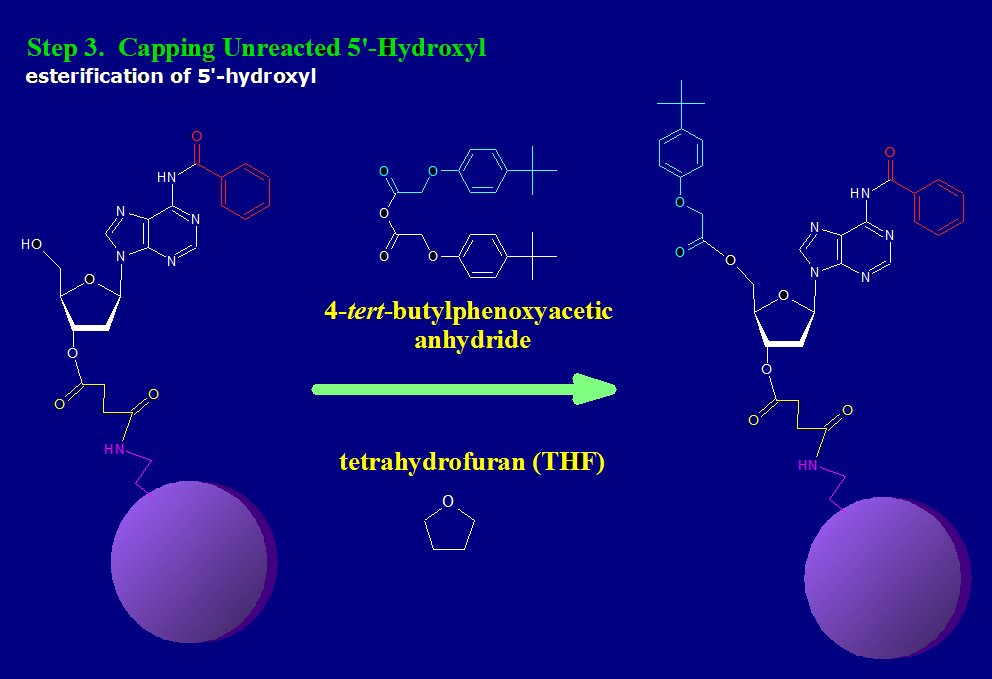
The phosphate atom on the newly added base (extended to the 5′ end), which was a phosphoramidite and is now a phosphotriester, is not particularly stable to the chemical steps that will follow in the cycle, in a repeat of the cycle. To stabilize it against these chemical steps, the phosphate must be oxidized, in this case using elemental iodine (I2), which is a weak oxidant. A strong oxidant may affect other functional groups, especially the functional groups on the purine and pyrimidine bases.
The oxidation state of phosphorus(V) is much more stable than phosphorus(III), which might be subject to cleavage or other modifications of the phosphate group.
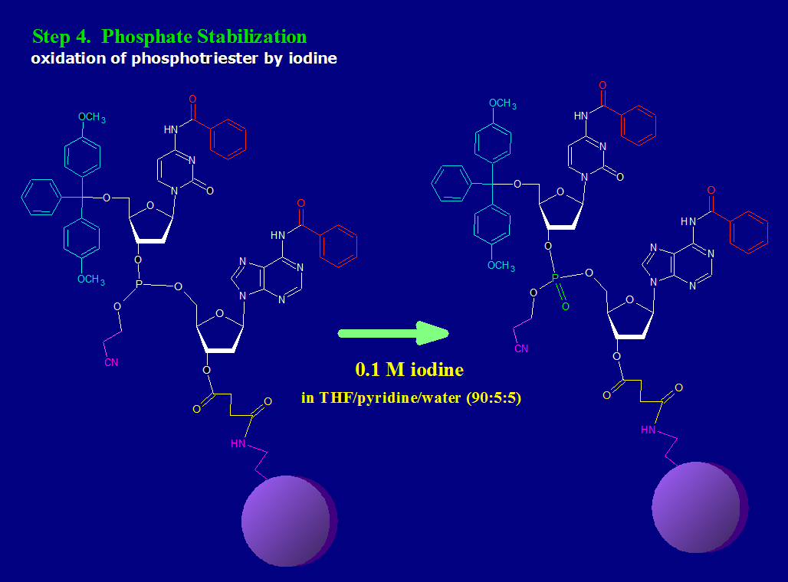
Once the oligonucleotide synthesis is complete, it is necessary to cleave the molecule off the solid phase (CPG particle). Moreover, all the protecting groups on the purine and pyrimidine bases (protecting the primary amine groups as amides) should be removed. This can be done using pH extremes. First the last dimethyltrityl (DMT) group on the 5′ base is removed using mild acid hydrolysis in 3% trichloroacetic acid in dichloromethane. Then the amide form protection of the purine and pyrimidine bases (A, G, C, not T) are deprotected using ammonium hydroxide. The ammonium hydroxide also cleaves the carboxylic acid ester that connects the 3′ base to the CPG particle, liberating the oligonucleotide into solution.
The only thing that remains is further purification of the oligonucleotide.
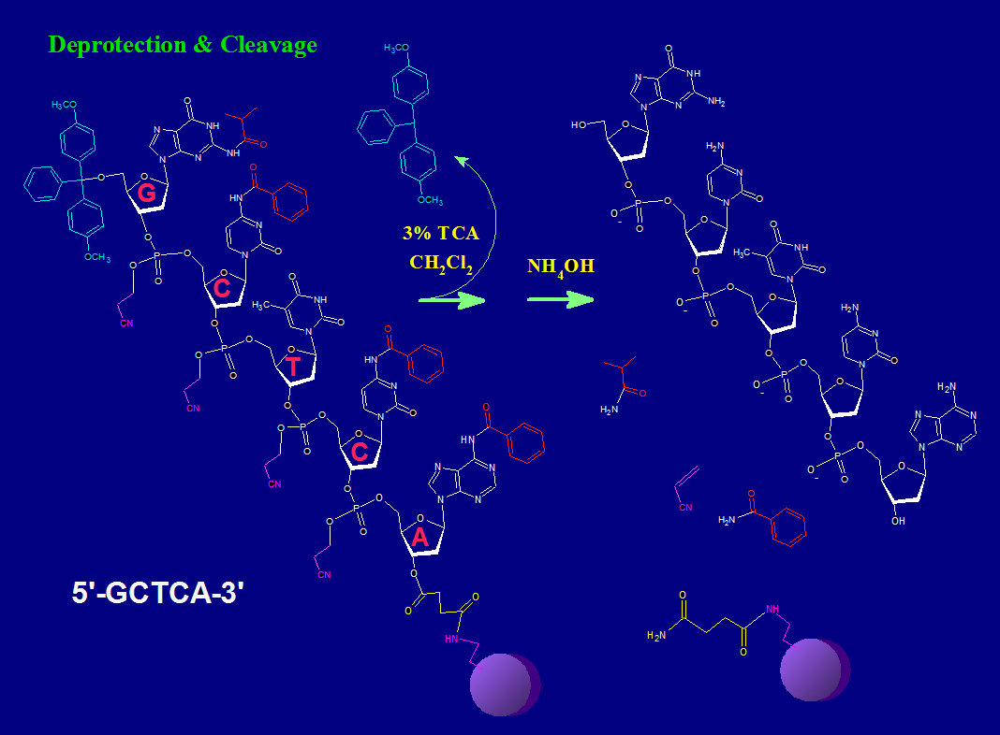
Dealting encompasses a variety of methods in which the purpose is to separate the liberated (cleaved) oligo from unreacted materials and byproducts present in the reaction mixture. What is not separated are the truncated n − 1, n − 2, n − 3, ... oligonucleotides also present as a result of the fact that organic reactions are never 100% completed. Anyone who has done organic chemistry in the laboratory knows that yields are never 100% because reactions are not always complete for various reasons. Desalting only removes the small molecule substances that are substantially different in chemical character from a single-stranded DNA molecule of short length.
A classic SepPak cartridge packed with C18 silica is quite efficient at purifying single-stranded DNA from the ions and the small molecule protecting groups that were removed in deprotection. Because single-stranded DNA of a length of 15 bases or more (the typical oligo/primer) is not a typical hydrophobic organic molecule that binds with pure water with a small amount of trifluoroacetic acid (TFA) ion-pairing agent, a different solvent is used to get the DNA to bind to the solid phase other than 0.1% TFA solution. The problem here is that charged groups on molecules need to be masked in order to bind well to the phase of hydrophobic C18 linear chains. The phosphodiester backbone is nothing but a high charge density of anions whose negative charge needs to be masked well in order to make the DNA strand more hydrophobic. The role of TFA is that it is a very strong acid and it protonates the silanol groups on the silica support (which are negatively charged and cause ionic interactions), and it also protonates any carboxylates found on many organic molecules. In addition, the trifluoroacetate anion associates with any protonated functions on the organic molecules being separated (amine groups get protonated) and these are masked.
The ss DNA in 0.1% TFA however might break down the oligo, so a more mild pairing agent is used. In this case, triethylamine acetate, [CH3CH2NH(CH2CH3)2]+ −OOCCH3, is the most effective. The cationic part associates with negatively charged phosphate and its triethyl groups increase its hydrophobocity for binding to C18, and the acetate group can associate with any positive charge that might exist on the purine or pyrimidine moieties.
That DNA is insoluble (precipitated) in alcohol such as ice-cold ethanol (EtOH) or perhaps room temperature isopropanol or butanol is well known. But the DNA precipitated is both double-stranded and much longer (usually > 1000 bp) than the DNA for oligos here. Oligos that are too short are still soluble in alcohols typically.
When multiple samples are to be purified, HPLC is a must.
GE HealthCare Life Sciences published and application note titled Oligonucleotide purification by ion exchange chromatography: process development, optimization and scale-up in which they did a very large scale (150 grams) purification of phosphorthiolate-based antisense oligonucleotides with a yield of about 80% and purity of 95%. They used a quaternary ammonium column.
Antisense oligonucleotides as potential therapeutics are synthesized as phosphorthiolates rather than as natural phosphodiesters. The reason is because the sulfur-based nonbridging atom has a longer half life compared to the natural form.
Using ion-exchange chromatography to purify oligonucleotides is quite useful in that it works well in aqueous conditions and that elution order is based on oligonucleotides length, the desired feature of cleaning up after oligonucleotide synthesis. Use of this however requires an additional clean-up step to remove salts using either ultrafiltration or gel filtration with desalting column (Sephadex G-25).
The goal this purification is to remove oligos having lengths other than the planned target. Usually the impurities have a smaller number of bases. Other impurities may be related to unwanted oxidation of phosphorthiolates, that is (P=O)x impurities, where x is the number of linkage where nonbridging sulfur is replaced by an oxygen atom. The (P=O)1 is the most abundant impurity.
At the laboratory scale an AKTAexplorer 100 automated LC with XK 26 (2.6 cm dia) column was used. The buffer is 20 mM NaOH and elution is with increasing NaCl. Use of NaOH ensures that no secondary structure is present and that oligos do no aggregate. The 20-mer ISIS 2302 oligo (5′-GCCCAAGCTGGCATCCGTCA-3′) was tested. To determine purity based on length, capillary gel electrophoresis with 40 cm gel-filled capillary is run at 300 V/cm. Phosphodiester content is determined by analytical anion exchange: 1 ml RESOURCE Q column run with a 20 mM NaOH equilibration and 20 mM NaOH + 2.5 M NaCl (solvent B) in a gradient with T = 70°.
Three different media were tested: Q Sepharose Fast Flow, Q Sepharose High Performance, and SOURCE 30Q.
TLC is a less expensive alternative to HPLC for small-length (primer-sized) oligos, able to separate n (full-length) from n − 1 oligos.
The PolyGen 10-Column Synthesizer is a very flexible instrument. Bulk CPG
particles (CPG not prepacked into and purchased as columns) is used and poured
into cylindrical holes (columns
) in a sliding bar (slider
).
The instrument has four
sliders.
Fast and High Quality (HQ) Programs. The Fast program would probably be the choice for routine service. The oligos synthesized are adequate for commercial production. Total solvent use is 600 µl. The High Quality program uses more solvent (1.1 ml) and more time in which to improve the efficiency of synthesis to a greater level.
The instrument has special sensors within it to measure volumes of reagents transferred from stock/working containers to columns.
Capacities. The standard slider allows the synthesis of oligos in the range of 10 to 1000 nmol in each column. A special large capacity slider provides columns in the 1000 - 5000 nmol (1 to 5 µmol).
Turnaround. The chemistry of the fast program is such that 10 couplings (base additions) can occur in 6 minutes. A typical primer of 18-25 nt can thus be complete in 15 minutes.
Always wear nonpowder laboratory gloves. There are two purposes here:
Wear a laboratory coat. These chemicals can damage ordinary street clothing, and materials from street clothing c
Work in a properly rated fume hood. The first thing you should do is to turn on the fume hood if it requires a warm-up period for proper operation (some do require it). Then continue preparing for the synthesis in other ways. Pipetting and mixing reagents that give off caustic fumes is dangerous outside of a fume hood.
Safety goggles/eye protection and Eye Wash. You should be wearing some kind of eyewear approved for use in the laboratory in acting as a barrier between your eyes and any chemicals you are working with. If you are working in a fume hood, at least that also provides an eye barrier. But not all operations where splashing of chemicals in the eyes occurs inside a fume hood. You are risking permanent eye damage and even blindness by manipulating chemical containers and samples without eye protection of any kind! DON'T DO IT!!.
Although small volumes of waste are generated, you should be aware that it is caustic, toxic, and mostly likely flammable.
If there is no proper waste disposal service for the facility, then perhaps the following can be done, in this order:
Always switch the power off and remove the plug from the electrical socket if any kind of service involving removal of the instrument cover panel is to be done.
The PolyGen-10 has a universal power supply that operates the instrument with A/C voltages ranging from 80 to 240 VAC.
There are different software interfaces available to the user. The instrument features its own LCD display that operates the instrument and allows programming in a blunt (less user-friendly) interaction with the user. The LCD display and softkeys panel is shown in the image below.
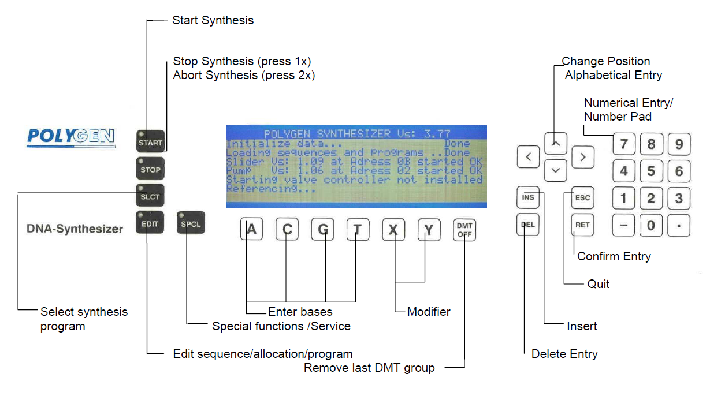
Alternatively, separately purchased software that operates on a Windows system and which controls the instrument can be used, providing a much more friendly interface. The Windows software would be recommended for instruments being used for commercial production, as it would reduce the risk of making errors, as well as be used in records keeping (database interaction), which the LCD interface does not offer.
The software interface for the PolyGen 10-Column has many parameters configured by the user. Flow rates and step times are all settable to values other than default values, providing significant flexibility and not forcing the user into using only preset programs.
Press the edit key to go into the Edit menu.
The edit menu has four selections on start-up. These selections present submenus and the purpose is given below.
Use the < and > keys for selecting the submenu choice, and the ret key to enter the submenu.
By selecting Sequence submenu, a series of displays will be presented for entering a sequencing and assigning the sequence to a column. Each of these selections has an entry or additional submenu set of options
In this selection, the ten stored sequences can be assigned to one of the ten columns in the synthesizer. Look at the image of the LCD display below:
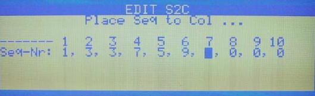
There are two rows of values. The top row corresponds to the position (numbering) of the ten columns of the synthesizer. The bottow row corresponds to the number of the defined sequence explained in the Editing the Sequence section.
In the example given in the LCD display, Sequence Number (Seq-Nr) 1 is assigned to column 1. Both columns 2 and 3 have the Sequence Number 3 assigned to them; this might the case if double the amount of oligo is to be synthesized, or if column 2 is to be made at 50 nmol and column 3 is made at 500 nmol, but both with the same sequence. Column 4 is assigned to make the defined sequence of Sequence Number 7. Columns 8, 9, and 10 are not assigned.
IMPORTANT: if a column is NOT to be used in a synthesis run, use the 0 key for that column assignment, or else chemicals will be passed through the column anyway.
The ret key is pressed when the assignments are complete and the changes are to be saved. Do not press the ESC key unless the changes are not to be saved.
Up to five different main programs can be defined, and each is numbered 1 to 5.
Press the key edit, select the Main-Prg option for its submenu and use the numeric key pad or the Λ or V to select a program number, and then press ret.
In the next display, a Sub-Prg or Comment choice is offered. The Comment can be used to create a name for the main program. The Sub-Prg selection (press ret) presents another submenu of the following choices:
Each main program can have up to 40 steps.
Each main program must have one coupling program.
There are 12 possible steps that can be entered in the main program.
The way to insert/add a step to the program is to select a step with
the arrow keys, then press the soft key under the ENTER command
(this will be the key with the dmt
off label; see the image of the display below).
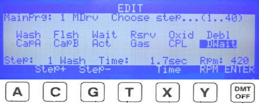
Fluids such as reagents and waste and washing fluids are moved using the pump in the syntheizer. The volume of fluid moved is a function of the speed of the pump (specified in RPM) and the Time that the pump is operated. The soft keys for these two parameters are shown in the interface, and correspond to the X and Y keys for pumping time and speed (rpm), respectively. Time values can range from 0.1 seconds to 999.0 seconds. The RPM values can range from 0 to 990, but usually values over 600 rpm are not needed. A separate section discusses how to calibrate the pump rpm to its flow rate.
Saving A Program. All additions, deletions and edits to the steps of the main program are saved by when the esc is pressed to return to the parent menu.
| Step # | Step Name | Pump | |
|---|---|---|---|
| duration (s) | rpm | ||
| Main | |||
| 01 | Wash | 3.5 | 300 |
| 02 | Debl | 2.5 | 250 |
| 03 | Wait | 55 | |
| 04 | Wash | 8.0 | 300 |
| 05 | Act | 2.5 | 250 |
| 06 | CPL | ||
| 07 | Wait | 55 | |
| 08 | Wash | 1.0 | 300 |
| 09 | Cap A | 1.5 | 150 |
| 10 | Cap B | 1.5 | 150 |
| 11 | Cap A | 1.5 | 150 |
| 12 | Cap B | 1.5 | 150 |
| 13 | Wash | 1.0 | 300 |
| 14 | Oxid. | 2.5 | 250 |
| 15 | Wash | 3.5 | 350 |
| Remove DMT | |||
| 01 | Wash | 3.0 | 300 |
| 02 | Debl | 2.5 | 250 |
| 03 | Wait | 55 | |
| 04 | Wash | 8.0 | 350 |
| 05 | Gas | 4.5 | 400 |
| Finish | |||
| 01 | Gas | 10 | 400 |
| Step # | Step Name | Pump | |
|---|---|---|---|
| duration (s) | rpm | ||
| Main | |||
| 01 | Wash | 3.5 | 300 |
| 02 | Gas | 4.0 | 400 |
| 03 | Debl | 2.0 | 200 |
| 04 | Debl | 2.0 | 200 |
| 05 | Wait | 30 | |
| 06 | Wash | 10 | 350 |
| 07 | Act | 3.0 | 250 |
| 08 | CPL | ||
| 09 | Wait | 60 | |
| 10 | Wash | 2.0 | 300 |
| 11 | Cap A | 3.0 | 200 |
| 12 | Cap B | 1.5 | 150 |
| 13 | Cap A | 1.5 | 150 |
| 14 | Cap B | 1.5 | 150 |
| 15 | Wash | 2.0 | 300 |
| 16 | Oxid | 2.5 | 250 |
| 17 | Wash | 4.0 | 350 |
| Remove DMT | |||
| 01 | Wash | 3.0 | 300 |
| 02 | Gas | 4.0 | 400 |
| 03 | Debl | 2.0 | 200 |
| 04 | Debl | 2.0 | 200 |
| 05 | Wait | 30 | |
| 06 | Wash | 10 | 50 |
| 07 | Gas | 4.0 | 400 |
| Finish | |||
| 01 | Gas | 10 | 400 |
| Step # | Step Name | Pump | |
|---|---|---|---|
| duration (s) | rpm | ||
| Main | |||
| 01 | Wash | 3.0 | 300 |
| 02 | Gas | 4.0 | 400 |
| 03 | Debl | 2.0 | 200 |
| 04 | Wait | 20 | |
| 05 | Debl | 2.0 | 200 |
| 06 | Wait | 20 | |
| 07 | Wash | 10 | 350 |
| 08 | Act | 3.0 | 250 |
| 09 | CPL | ||
| 10 | Wait | 120 | |
| 11 | Wash | 2.0 | 300 |
| 12 | Cap A | 3.0 | 200 |
| 13 | Cap B | 1.5 | 150 |
| 14 | Wait | 15 | |
| 15 | Cap A | 1.5 | 150 |
| 16 | Cap B | 1.5 | 150 |
| 17 | Wait | 20 | |
| 18 | Wash | 2.0 | 300 |
| 19 | Oxid | 2.5 | 250 |
| 20 | Wait | 20 | |
| 21 | Wash | 4.0 | 350 |
| Remove DMT | |||
| 01 | Wash | 3.0 | 300 |
| 02 | Gas | 4.0 | 400 |
| 03 | Debl. | 2.0 | 200 |
| 04 | Wait | 20 | |
| 05 | Debl | 2.0 | 200 |
| 06 | Wait | 20 | |
| 07 | Wash | 10 | 350 |
| 08 | Gas | 4.0 | 400 |
| Finish | |||
| 01 | Gas | 10 | 400 |
| Step # | Step Name | Pump | |
|---|---|---|---|
| duration (s) | rpm | ||
| Main | |||
| 01 | Wash | 3.5 | 300 |
| 02 | Gas | 4.0 | 400 |
| 03 | Debl | 2.0 | 200 |
| 04 | Debl | 2.0 | 200 |
| 05 | Wait | 30 | |
| 06 | Wash | 10 | 350 |
| 07 | Act | 3.0 | 250 |
| 08 | CPL | ||
| 09 | Wait | 600 | |
| 10 | Wash | 2.0 | 300 |
| 16 | Oxid | 2.5 | 250 |
| 17 | Wash | 10 | 350 |
| Step # | Step Name | Pump | |
|---|---|---|---|
| duration (s) | rpm | ||
| Main | |||
| 01 | Wash | 3.5 | 300 |
| 02 | Gas | 4.0 | 400 |
| 03 | Debl | 2.0 | 200 |
| 04 | Debl | 2.0 | 200 |
| 05 | Wait | 30 | |
| 06 | Wash | 10 | 350 |
| 07 | Act | 3.0 | 250 |
| 08 | CPL | ||
| 09 | Wait | 60 | |
| 10 | Wash | 2.0 | 300 |
| 11 | Cap A | 3.0 | 200 |
| 12 | Cap B | 1.5 | 150 |
| 13 | Cap A | 1.5 | 150 |
| 14 | Cap B | 1.5 | 150 |
| 15 | Wash | 2.0 | 300 |
| 16 | Oxid | 2.5 | 250 |
| 17 | Sulphur | 2.5 | 300 |
| 19 | Wait | 90 | |
| 20 | Wash | 4.0 | 350 |
| Remove DMT | |||
| 01 | Wash | 3.0 | 300 |
| 02 | Gas | 4.0 | 400 |
| 03 | Debl | 2.0 | 200 |
| 04 | Debl | 2.0 | 200 |
| 05 | Wait | 30 | |
| 06 | Wash | 10 | 350 |
| 07 | Gas | 4.0 | 400 |
| Finish | |||
| 01 | Gas | 10 | 400 |
| Step # | Step Name | Pump | |
|---|---|---|---|
| duration (s) | rpm | ||
| Main | |||
| 01 | Wash | 3.5 | 300 |
| 02 | Gas | 4.0 | 400 |
| 03 | Debl | 2.0 | 200 |
| 04 | Debl | 2.0 | 200 |
| 05 | Wait | 30 | |
| 06 | Wash | 10 | 350 |
| 07 | Act | 3.0 | 250 |
| 08 | CPL | ||
| 09 | Wait | 800 | |
| 10 | Wash | 2.0 | 300 |
| 11 | Cap A | 3.0 | 200 |
| 12 | Cap B | 1.5 | 150 |
| 13 | Cap A | 1.5 | 150 |
| 14 | Cap B | 1.5 | 150 |
| 15 | Wash | 2.0 | 300 |
| 16 | Oxid | 2.5 | 250 |
| 17 | Wash | 4.0 | 350 |
| Remove DMT | |||
| 01 | Wash | 3.0 | 300 |
| 02 | Gas | 4.0 | 400 |
| 03 | Debl | 2.0 | 200 |
| 04 | Debl | 2.0 | 200 |
| 05 | Wait | 30 | |
| 06 | Wash | 10 | 350 |
| 07 | Gas | 4.0 | 400 |
| Finish | |||
| 01 | Gas | 10 | 400 |
| * different reagents! | |||
| Step # | Step Name | Pump | |
|---|---|---|---|
| duration (s) | rpm | ||
| Main | |||
| 01 | Wash | 2,5 | 300 |
| 02 | Debl | 2,0 | 200 |
| 03 | Debl | 2,0 | 200 |
| 04 | Wait | 25 | |
| 05 | Wash | 6,0 | 300 |
| 06 | Act | 2,5 | 250 |
| 07 | CPL | ||
| 08 | Wait | 25 | |
| 09 | Cap A | 1,5 | 150 |
| 10 | Cap B | 1,5 | 150 |
| 11 | Cap A | 1,5 | 150 |
| 12 | Oxid. | 2,5 | 250 |
| 13 | Wash | 3,0 | 350 |
| Remove DMT | |||
| 01 | Wash | 3.0 | 300 |
| 02 | Debl | 2.5 | 250 |
| 03 | Wait | 30 | |
| 04 | Wash | 8.0 | 350 |
| 05 | Gas | 4.5 | 400 |
| Finish | |||
| 01 | Gas | 10 | 400 |
| Step # | Step Name | Pump | |
|---|---|---|---|
| duration (s) | rpm | ||
| Normal | |||
| 01 | BASE | 1.3 | 270 |
| 02 | Flsh | 4.0 | 400 |
| Double cpl. | |||
| 01 | BASE | 1.3 | 270 |
| 02 | Wait | 20 | |
| 03 | Act | 1.3 | 270 |
| 04 | BASE | 1.3 | 270 |
| 05 | Flsh | 4.5 | 400 |
| Step # | Step Name | Pump | |
|---|---|---|---|
| duration (s) | rpm | ||
| 01 | Wash | 4.0 | 400 |
| 02 | Gas | 4.0 | 400 |
| 03 | Debl | 2.5 | 270 |
| 04 | Debl | 2.5 | 270 |
| 05 | Wait | 55 | |
| 06 | Wash | 16 | 350 |
| 07 | Act | 5.0 | 270 |
| 08 | CPL | 5 or 6 | |
| 09 | Wait | 60 | |
| 10 | Wash | 2.0 | 300 |
| 11 | Cap A | 3.5 | 250 |
| 12 | Cap B | 3.0 | 170 |
| 13 | Cap A | 3.0 | 170 |
| 14 | Wash | 2.0 | 350 |
| 15 | Oxi | 5.0 | 220 |
| 16 | Wash | 10.0 | 300 |
| Step # | Step Name | Pump | |
|---|---|---|---|
| duration (s) | rpm | ||
| No. 5 | |||
| 01 | BASE | 5.0 | 270 |
| 02 | Flsh | 4.0 | 400 |
| No. 6 | |||
| 01 | BASE | 5.0 | 270 |
| 02 | Wait | 20 | |
| 03 | Act | 3.5 | 270 |
| 04 | BASE | 3.5 | 270 |
| 06 | Flsh | 4.0 | 400 |
This specifies the steps that define the addition (coupling) of a new base monomer to the growing oligo on the solid phase. Although the different columns may have different bases coupled, this program is run to determine how each of the base monomers is to be coupled depending on the base.
From the main edit interface, select Coupl-Prg and press ret. The operator then selects a Coupling Program Number (CouplPrg-No) to create or edit.
After pressing ret, a submenu display for selecting a step in the coupling program Coupl-Step or for editing the coupling program comment (Comment) is available.
In the Base Step
(Coupling Step) menu, the first step is presented
automatically. If a different step is available, the user can enter a number
to choose a step or scroll through with the Λ or V keys.
Each step shows a synthesizer operation that is available (Wash, Fl[u]sh,
Wait, etc.). It shows also the type of operation currently performed, the
time it is perfored, and the Rpm value. By default the
base step time is 1.3 seconds at 270 rpm. This value is correct and should
not be altered in nearly every case. A time value too long could cause
activator to be washed out of the reaction chamber, and a time value too
short will mean the base does not reach the CPG material in slider.
The oligonucleotides are synthesized on a solid substrate of controlled pore glass (CPG) beads or particles. The CPG has already been modified with one of the four bases, A, G, C, or T. Because chemical synthesis, unlike natural enzymatic synthesis, is from 3′→5′ rather than 5′→3′, if the oligo to be synthesized is specified as 5′-ATTCAGGATTCGTCCGAT-3′, then in order to synthesize this oligo, the column borehole must be filled with the thymidine (T)-modified CPG (i.e. CPG-T), since it is the last (3′) base. As synthesis occurs, base A, G, C, C, T, ... and so on will be added, in backwards (3′→5′) order.
Each column borehole in the ten-column (ten-borehole) column slider contains two frits within the column. This bottom frit holds the CPG particles in the column as reagents are pumped/flushed through the borehole (cylinder) of the column. Thus fluid moves through, but not the particles/beads.
In order to manipulate the bottom frit, a pair of tweezers (forceps) must be used. The bottom frit fits snugly into the bottom of a column borehole (cylinder). There is a stamp tool (a special cylindrical tool) which is used to position the frit down the bottom of the borehole (see image). 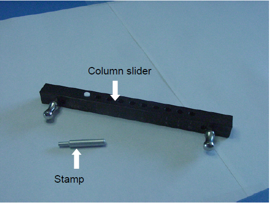 It is critical not to use too much pressure on the frit with the stamp tool, since it can crush the frit and make it porous, and defeat its purpose. 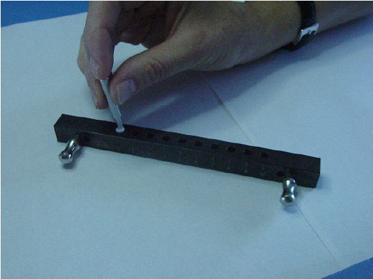
Once the bottom frit is positioned, then the CPG particles are spooned into the column. The spoon spatula provided with the instrument has two different sizes, 0 and 1. Size 0 will scoop about 3 mg of CPG particles, while size 1 scoops about 5 mg of particles. There can be variation on the mass, depending on the particle (grain) size. Four rounded size 1 spoonfuls of CPG can fill a column borehole. The range of synthesis is from 10 nmol to 5 µmol (5000 nmol), a 500-fold range. 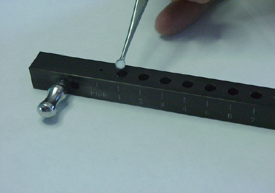
After the CPG particles are spooned in, the top frit is then placed on top of the column. It is pressed into the borehole with the stamp until it falls within the borehole and level with the upper edge of the borehole. 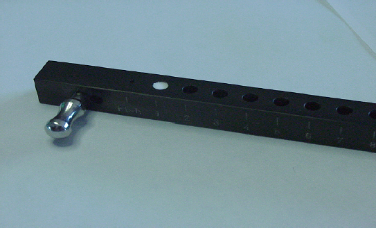
The quantity of CPG to use will depending on experience, namely running tests to determine proper levels.
In order to perform a synthesis run, a main program must be selected.
The main program selection interface for executing a run is brought to the display using the SLCT key. Enter the number using a number pad key or using Λ or V keys to set the value after the prompt MainPrg-No:. Press the ret to complete the selection.
Press the start key. The display is shown as below:
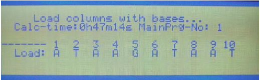
The top line Load columns with bases
instructs the operator to load the
holes in the Column Slider with CPG particles whose bases are indicated in the
row of A, T, C, G, X, or Y letters shown below the numbers 1 through 10 indicating
the column positions. The message Calc-time indicates the total time
for the completion of the main program, and MainPrg-No indicates the
main program selected.
At this point the operation of the instrument in the run is halted so that the operator can fill the columns with the appropriate base-modified CPG particles.
Once the loading of the Column Slider is complete and everything is in place, the operator presses start again. The instrument enters into the RUNNING mode, and the LCD display is shown as follows:
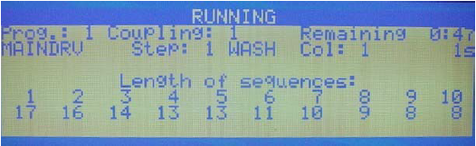
In the top line, Prog indicates the main program number that is running, Coupling indicates the number of bases that have been added or coupled to the sequence for all columns so far in the execution of the program, and Remaining indicates the time in hours and minutes until the entire synthesis run is complete for all columns which are programmed for a synthetic run.
In the second line, the Step value indicates the step in the main program currently being executed. The value Col indicates the column that is currently being operated upon for the step currently running. A time values in seconds to the right indicates the time remaining for the performance of the step.
The last two lines shows the column positions and the number of nucleotides that will eventually be produced by the running program.
DMT Monitoring. During the running of the main program, pressing slct changes the display to include the DMT Monitoring mode. The display includes a new field actual Trityl with a number value between 0-100 (as a percentage of absorption). For this number to be accurate, the DMT monitor must be calibrated.
Pausing or Aborting A Run. There may be a need to pause the
operation of a synthesis run in order to service the instrument or perform some
other manual operation. Press the stop key
just once in order to pause the run. During a paused run, the
spcl (for special
) key can be pressed to
enter an interface that allows the performance of some operations that can be
done during a paused run, such as washing a column or a tubing line. If the
stop key is pressed a second time, the execution
of the main program (and the entire synthesis run) is aborted.
Whenever a synthesis run is to be interrupted for a possibly longer time, make sure it is done during a washing step. A synthesis can then usually be resumed successfully from that point.
Go to the Edit menu edit. Select the choice Remove DMT.
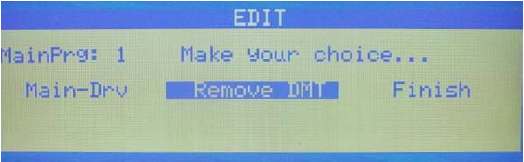
The interface below is presented. Note MainPrg: 1 RDMT Choose
step...(1..40) in the display. Up to 40 steps can be programmed using the
six functions available in the interface. At the bottom of the display, the
keys immediately below. Note that the dmt
off key functions as the ENTER key. After the
program has been entered, use esc to quit
the interface and save changes.
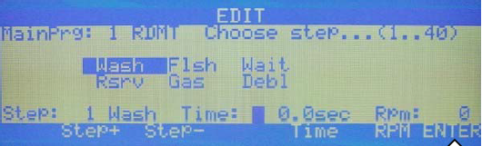
Note that many oligonucleotide purifications that are performed after the oligo synthesis is complete and after the oligo is separated from the CGP particle exploit the presence of a DMT group on the 5′ end base to achieve the purification, and so final DMT removal is logically optional. The oligo is then acidified after purification to remove the DMT group. Determine what your purification method is before determining whether to use DMT removal or not.
The purpose of a Finish program may be to perform additional processing on the synthesized oligos, for example, drying.
The Finish program is also accessed from the Edit menu (edit) as shown in the display below. Use the <, >, and confirm with ret.
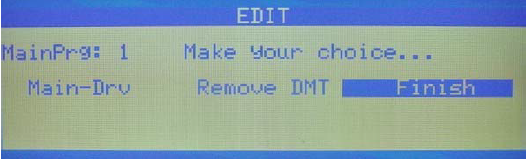
The display will read MainPrg: 1 Fnsh Choose step...(1..40) as indicated in the figure below.
The programmming of Finish can take up to 40 steps, with the functions shown below.
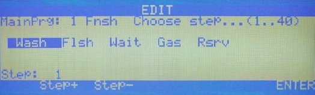
When adding or editing a step, using the ENTER soft key. On the bottom line of the display just above the soft key line, the current Step number is shown, the type of step, the duration (Time) of the step, and the Rpm of the pump if it is pumping operation. To control and edit steps, use the Step+ and Step− soft keys.
After synthesis is completed, the column slider must be removed from the instrument. One end of the stamp tool contains a pick for removing the frits and the CPG packing, used as shown in the image below. 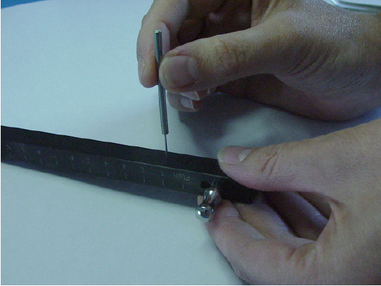
Within the instrument tool set is a holding block that allows the CPG particles in column slider to be collected in sample vessels so that they can be processed in a further manner (cleavage, deprotection). 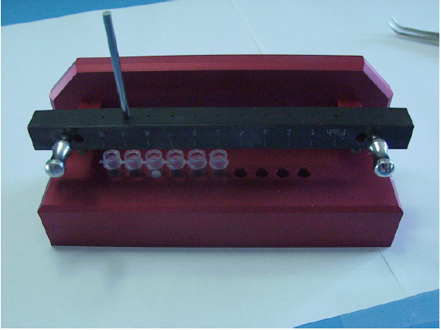
The oligonucleotide must be liberated from its covalent attachment to the solid phase support, that is, the CPG particle. A 32% ammonium hydroxide (NH4OH) is used and requires at least 7.5 h and might require 25 h dependent on sequence composition and procedure. CPG in sample containers of 300 µl up to 1000 nmol and a 1 ml container for 1000-5000 nmol are used.
For the smaller container, add 200 µl of concentrated NH4OH. For the larger container, 500-1000 µl.
Let stand 90 min at room temperature. Decant the centrifuged material into another container. Add 200 µl, shake/vortex, then spin and combine the supernatant with the first.
Now incubate the glass container in heating block at 55° for 6-8 h, but if the proporition of G monomer is > 25%, incubate overnight at 55°. At as alternative, allow sample to sit at room temperature for 24 h.
Fast deprotection. Heat the CPG with 1 ml concentrated ammonium hydroxide, then add 50 µl triethylamine for 60 min at 80°, then purify.
Caution. Always allow sealed containers with ammonium hydroxide to cool to room temperature before opening!
The samples can be lyophilized prior to any purification step.
Press the spcl on the left of the display. The following interface is presented:
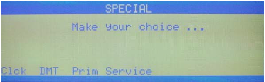
The meanings of the soft keys are:
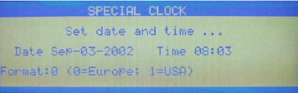
Press key a to open display for setting date and time. Use the V and Λ for chaning the month, then ret to confirm. Then use the number keys 1, 2, 3, ... to enter the day and year. Always use ret for each input parameter. Enter the time also using the numeric keys. Continue to press ret which causes display cursor to jump to format field. Choose the desired European or USA format. [Note that the date/time format display does not occur in the Special Clock display, but instead on the start screen.]
To leave the interface, press esc
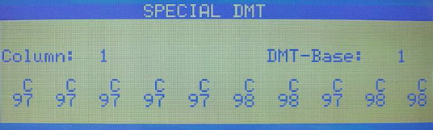
Press the C key to the DMT monitor. Ten values showing the percentage absorbance of each of the ten columsns are given. The V and Λ can be used to select the columns, and the < and > are used to change position within the sequence. esc leaves the submenu.
In the SPECIAL interface, click the soft key Prim (g) to enter the SPECIAL PRIMING interface. The display (below) shows reagent lines, pump speed, and two standard flushing times, a Time short and Time long values in seconds. The display row with blue background represent the reagent lines, and the hard keys that select them are shown.
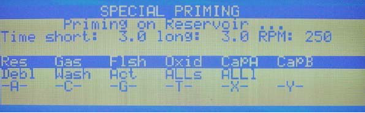
In order to flush (empty) the line from the oxidizer solution to the waste reservoir, press and hold the t key. The slider will move to the desired position and the pump runs for as long as the key is held down.
To select a different line (tubing) to flush, use the V and Λ. Two additional functions in this menu are ALLs and ALLl. These respectively do a flush of all reagent lines for a short or long duration, the duration being the seconds entered into the Time short or Time long setting.
To set the short and duration times, the Time short and Time long settings toggle using the ret. This also toggles to the pump speed (Rpm) key. Use the numeric keys to set values. To quit the SPECIAL PRIMING interface, use the esc or spcl keys.
When more than four bases are used in a synthetic run, bottles have to be changed. When synthesis reaches the point of requiring a modifying base and then a bottle change, the instrument gives both a display and audio alert. The display shows the bottle to be changed.
Change the bottle, and then press the dmt
off hard key for the Prime soft key. Note in
the example below, with a coupling program running in progress, the bottle
X1 position needs changing. After changing, and pressing Prime, the
reagent line for X1 will be primed.
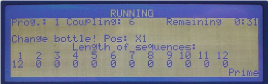
Once the priming step is done, press start to resume the running of the program.
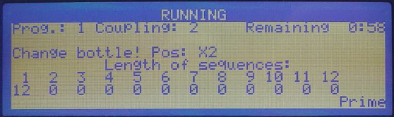
As for the special functions, press the spcl at the left of the display. Press the hard key (t) for the soft key Service. The Service interface is shown below:
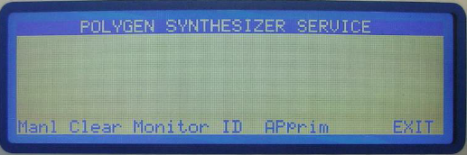
The service interface has the following selections/functions:
NOTE: only experienced users, probably at the direction and under remote supervision PolyGen service personnel, should use this function, since it makes critical settings affecting the positions of the sliders.
The display looks like this after entering this service function:
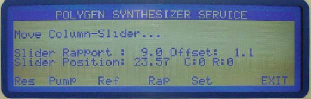
This state of the instrument now allows movement of the column slider by hand, within the calibrated intervals. The default interval is 9.0 mm as shown in Slider Rapport. This is because of the spacing of the column boreholes.
The V and Λ keys are used to move the slider in the desired direction. Use of the < and > causes the column slider to be moved in increments of 0.1 mm.
The slider rapport setting should remain at 9.0 mm, although if there is any reason to change it, use the Rap soft key (t hard key) to alter the settings. A number key enters the new value.
The value Offset is distance from the zero position of the slider to the first column in millimeters.
The Slider Position in the display refers to the current distance or position of the slider from its zero point (in millimeters).
The soft key Ref (g hard key) is used for referencing: it returns both sliders to the zero point, and then the sliders move to the starting position.
Moving the Reagent Select (Reservoir) Slider. Press the Res soft key (a hard key) for moving the reservoir slider. (In this interface, note the soft key for the a hard key has changed from Res to Col, to indicate manual control is no longer on the column slider.) The V and Λ keys move the slider in calibrated intervals in order to flush tubing manually. By pressing Ref (g hard key), reagent select slider is moved to its reference position, which is determined using an initialization sensor. Note also that this slider rapport value is different than the column slider (4.0 mm), which is the distance between individual reservoir supply lines. This value should only ever be changed at the direction of PolyGen service engineers.
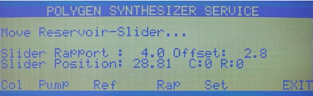
Calibrating Reagent Select Slider. Follow these directions:
full mooneffect. This means the boreholes of the reagent select slider and reservoir supply line line up concentrically.
Calibrating the Column Slider. After calibrating the reagent select slider, then the column slider is calibrated.
full mooneffect. This means the boreholes of the column slider align with both the reagent select slider and the reservoir supply line line up concentrically.
Calibrating the Pump. Pump flow is controlled via its speed in revolutions per minute (rpm). Click the Pump soft key (c hard key) within the MANL interface. The display interface will now appear as follows: 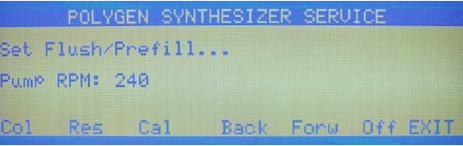 The pump calibration software interface is as follows:
In order to calibrate the pump, do the following:
Within the Service menu, select the Clear soft key (c hard key). Note that all stored programs—main, coupling, additional—will be deleted. In addition, DMT values and sequences done are also deleted. To leave the function, press esc.
A photometric detector tuned to 470 nm is used to measure the absorbance of dimethyltrityl cation released from the 5′ group. Monitoring can be done on a linear (value 0) or logarithmic (value 1) scale. When synthesis is done at scales of 5 µmol or more, the use of logarithmic mode is recommended. The value for Monitor Mode in the display is set. 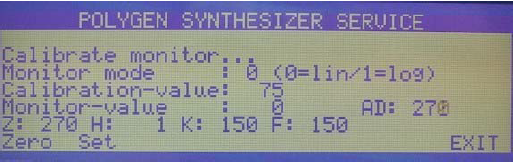
In order to calibrate:
75as the Calibration-value if it is not already set.
Note that other displayed parameters are Z (zero), H (set), K (calibration factor), and AD (current measurement signal of the transducer).
In the main Service menu, press the ID soft key (t hard key). The display below is presented: 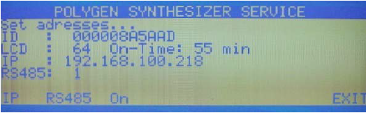
The display has the following indicating parameters:
Use this service menu to control autopriming and bolting together of sliders. The APprim soft key (x hard key) is pressed, and the following display is shown: 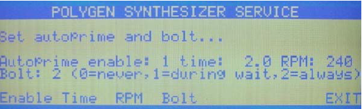
Enabling autoprime. Autopriming causes the automatic flushing of
the reagent select slider (Flsh position). If autoprime is enabled, it
shows a value of 1
and 0
if disabled. Enabling and disabling
is toggled using the a hard key. In general
autopriming should always be enabled to avoid problems associated with
residual volumes of reagents in the supply lines/tubing.
The priming is controlled by the pump settings, which are duration (time, in seconds) and speed (rpm) of the pump. Duration will be controlled by the Time soft key (c hard key); typically this is a value from 1.0 to 2.5 seconds. The pump speed is controlled by the RPM soft key (g hard key); typically this is a value between 200-300.
Bolting. When sliders are bolted together, a cross flow is prevented. When a slider moves, it will be between two positions, as shown in the image below: 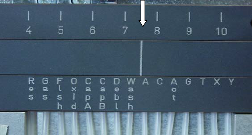
When sliding movement is complete, then boreholes in the system should align, as indicated in the image below. Column position 8 of the column slider is now aligned with Wash position of the reagent select slider, as shown in the image. 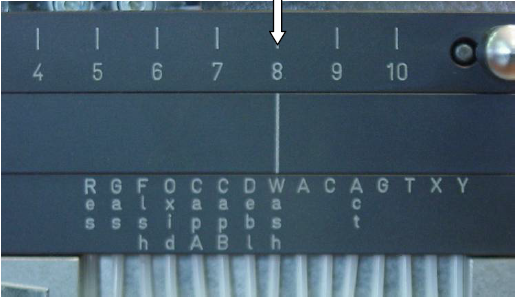
The bolting function has three settable values, numeric as 0, 1, and 2:
| Message | Problem | Corrective Action |
|---|---|---|
| Basemotor overcurrent | The Reagent Select Slider motor is using > 1.7 ampere current. A protective sensor circuit stops the power to the motor. | Sliding movement is being prevented by a mechanical problem, typically
caused by buildup of solid material that fouls the slider operation.
The slider needs to be removed, washed with acetone, mounted after drying. Press START; if it remains unresponsive, power the instrument off and then on. |
| Column motor overcurrent | The Column Slider motors are using > 1.7 ampere current. A protective sensor circuit stops the power to the motors. | Sliding movement is being prevented by a mechanical problem, typically
by an object within the column that impedes sliding movement. It might also
be caused by a buildup of solid material that prevents sliding.
The slider is removed and inspected for objects that should not be in it. Clean with acetone and re-mount the slider. Press START; if it remains unresponsive, power the instrument off and then on. |
| Pump motor overcurrent | The Pump motor is using > 1.7 ampere current. A protective sensor circuit stops the power to the motor. | The Pump head is fouled with a buildup of solid or viscous material. If the pump can still be operated in the MANL mode (to avoid dismantling the pump head), backflush the line and the pump head with ethanol or acetone. Remove the PEEK slider above the Reagent Select Slider, hold a paper towel below the borehole, and hang the waste tube in a glass beaker with ethanol or acetone, then use the reverse pump setting to flush out material. If the pump cannot be operated at all, remove the pump head and clean it preferably in a sonicating bath with water and then ethanol. The Pump head is tested. If it fails to operate, the head is replaced. |
| Check locking!!! | Two interlocking bolts necessary to slider movement are not correctly positioned in order to perform proper sliding movement and to create sealing. | Position the bolts to their correct placements, at the far left. Close both of the bolts and restart. |
| 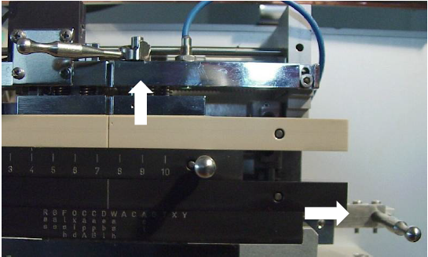 | ||
| Slider Communication error | During synthesis, an error in activating or selecting a slider occurred. This might be due to a lost electrical connection (loose cable or wire) or a defect in the slider control board on the left side of the instrument. | Examine the electrical connections between the main board and the slider control board. Re-connect any loose connection. If all connections seem proper, the slider board may have a defect, requiring replacement of the slider control board. Contact PolyGen service. |
| Slider Communication error | During synthesis, an error in activating or selecting a slider occurred. This might be due to a lost electrical connection (loose cable or wire) or a defect in the slider control board on the left side of the instrument. | Examine the electrical connections between the main board and the slider control board. Re-connect any loose connection. If all connections seem proper, the slider control board may have a defect, requiring replacement of the slider control board. Contact PolyGen service. |
| No Pump Communication | During synthesis, the pump may no longer be responding or it runs too fast or there is a high-pitched humming noise emanating from it. | This results from a commuication problem between the main board and the pump motor control board. Examine the electrical connections between the main board and the pump motor control board. Re-connect any loose connection. If all connections seem proper, the pump motor control board may have a defect, requiring replacement of the slider control board. Contact PolyGen service. |
In addition to the error messages reported by the user interface, the following issues may arise:
| Problem | Possible Cause(s) | Corrective Action |
|---|---|---|
| No Power | Power cord not connected to outlet | Control the power cord connection to the outlet and the main instrument switch being turned on after connection |
| Circuit break tripped | Disconnect the instrument power cord and reset the breaker. If it trips during reset, look for possible causes of an electrical short. Call electrical service if necessary | |
| Blown fuse | The instrument is protected by a fuse, near the power cord entrance. Check that the fuse is not burned out, and replace it with correctly rated fuse | |
| Fluid under the instrument | One or more of the sliders is producing leakage | Check the sliders and ensure that they are fitting tightly without leaking. Replace worn or defective sliders, if necessary. |
| A tubing screw joint is not connected or is loose fitting | Tighten (without overtightening) the joints that are screwed in | |
| A reagent bottle or flask is loose or not properly secured or is broken or cracked | control all the bottles and flasks, to see if they are tight or might be damaged or broken. Replace as necessary. | |
| Bubbles are in the waste tubing, and not in monitor tube | A leak is present on the inlet port side of the pump: check the tubing fit on the pump inlet port and replace the tubing if necessary. Check the tubing connector and replace it if necessary. |
The table below describes the terms/abbreviations used for reagents and the path they take as they go from the reagent bottle to waste.
| Keyword | Description |
|---|---|
| Wash | Dry acetonitrile (max water content 30 ppm or 0.003%) |
| Oxid | iodine in THF / pyridine / water (oxidizer)
from the reservoir via the column to waste |
| Deblock | 3% trichloroacetic acid (TCA) in dichloromethane (CH2Cl2)
from the reservoir via the column to waste |
| CAP A | acetic anhydride / lutidine / THF
from the reservoir via the column to waste |
| CAP B | 1-methylimidazole / THF
from the reservoir via the column to waste |
| Act | activator composed of tetrazole / acetonitrile
from the reservoir via the column to waste |
| Rsrv | optional reservoir
might be filled with sulfur for phosphorthioate synthesis |
| Flsh | flush is open/working, and the tubing line is not in use; the column is in bypass and is being flushed/washed in flush position (at far left of the column slider) |
| Gas | the tubing from the supply line is flowing with argon gas |
| Wait | this program step stops any activity of instrument (pumping, reagent transfer) while a chemical reaction incubation occurs |
| DWait | a special (dynamic) wait step that includes the time period of the previous step in multiple column operations. Suppose a deblock step of 2.5 s duration occurs on 10 columns and DWait = 30 s. This means that when deblock is complete on 10 columns, there will be 5 s remaining on the DWait step (column 10 will only have a 5 s deblock). |
| CPL | switching on the coupling program |
| AWash | wash step special to cleaning out the flush line after amidite coupling: reagent select slider moves to MeCN reagent, and column slider moves to Flsh position; no column flushing is done; use in combination to Flsh step or as alternative to it |
Amidite Preparation. DNA synthesis grade acetonitrile (MeCN) which is specially dried (< 30 ppm water) is added to each amidite bottle to that concentration is 50 mg/ml. To a 1 g reagent bottle, add 20 ml MeCN, and to a 2 g bottle, add 40 ml. This results in a concentration of about 58 mM for the adenine amidite to 67 mM for the thymidine amidite.
To draw up the MeCN, first fill a second syringe with argon gas, and perforate the septum with the gas. Now perforate another part of the septum with empty syringe and draw up the MeCN, allowing the other syringe to compensate for pressure changes by filling with argon.
Remove needle and allow solution to flow into inner wall of amidite flask. Screw back on its lid and dissolve with careful shaking action. It must fully dissolve. Mount the reagent bottle on to the instrument.
| Amidite Name | CAS | MW | Product Number |
|---|---|---|---|
| DMT-dA(bz) Phosphoramidite | 98796-53-3 | 857.93 | A111081-12, 12 × 1 g A111082-12, 12 × 2 g |
| DMT-dC(bz) Phosphoramidite | 102212-98-6 | 833.91 | C111081-12, 12 × 1 g C111082-12, 12 × 2 g |
| DMT-dG(ib) Phosphoramidite | 93183-15-4 | 839.92 | G111081-12, 12 × 1 g G111082-12, 12 × 2 g |
| DMT-dT Phosphoramidite | 98796-51-1 | 744.81 | T111081-12, 12 × 1 g T111082-12, 12 × 2 g |
Amidite reagent flasks should be in a 20 to 40 ml size, with a flask neck threading of 20-400.
Other reagents are in flask of 200 to 900 ml size, with flask neck threading of 28-400.
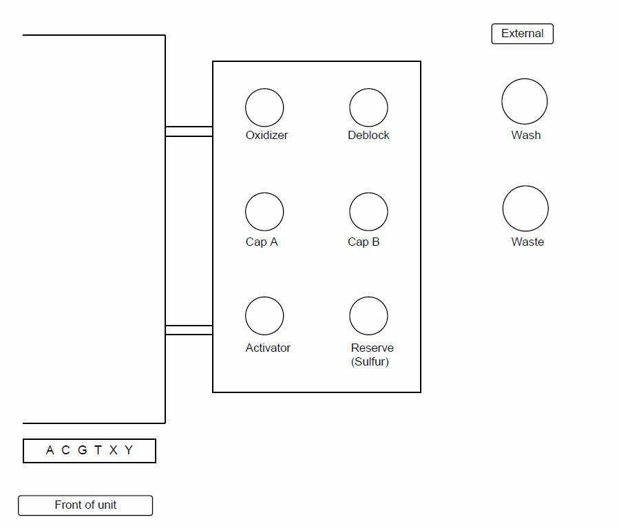
The synthesis scale is critical to an estimation of how much oligo will be synthesized. Most primer synthesis services offer to make oligos at 25, 50, 100, 200, 500, 1000, and 5000 nmol. When primers are used in life science research perhaps in cloning procedures (reverse transcription and amplification of reversed transcribed DNA, cloning into maintenance and expression vectors), then 100 nmol or less of oligo is needed. If instead hundreds of PCR amplifications are to be done as part of a large-scale clinical study or as routine diagnostics, then from 200 nmol and even more of oligo is desirable. For CPG-based synthesis as used by the PolyGen, the amount of the starting nucleoside attached to the glass support is a function of the surface area of the particle and required for determining scale. The table below shows the CPG type and the amount of base per mass of particles:
| CPG Type (Pore Size) | nmol base/mg CPG |
|---|---|
| 500 Å CPG | 30-40 |
| 1000 Å CPG | 25-35 |
| UHL CPG | 50-70, 90-110 |
The scale of synthesis is computed:
nmol oligo = CPG Type × Amount of CPG
For 25 nmol scale oligo, if using the 500 Å CPG, this computes to 25 nmol × 1 mg CPG / 30-40 nmol = 0.63-83 mg. For 50, 100, 200 nmol scale, just multiply that range by 2, 4, and 8, respectively. If the 1000 Å CPG is being used, the range for 25 nmol is 0.71 to 1.0 mg. This is basically a fraction of the spoon size 0 (3 mg) and size 1 (5 mg) provided by PolyGen. Therefore, it might be better to show the spoon sizes and the assumes CPG types, as given in the table below:
| Spoon size | Spoon Amount (mg CPG) | CPG Types | |||
|---|---|---|---|---|---|
| 1000 Å | 500 Å | UHL | |||
| 25-35 nmol base / mg CPG | 30-40 nmol base / mg CPG | 50-70 nmol base / mg CPG | 90-110 nmol base / mg CPG | ||
| 0 | 3 | 75-105 | 90-120 | 150-210 | 270-330 |
| 1 | 5 | 125-175 | 150-200 | 250-350 | 450-550 |
Note this is a very rough guide and will likely not be the final yield, since one must account for losses (reduced amounts) that will be obtained because of failed syntheses (could be from 2-10% depending on sequence length, quality of reagents and solvents, and non-optimal programming) as well as the necessarily less than 100% yields due to purification (HPLC, gel electrophoresis, other systems). You should do a λ = 260 nm reading on the final product to make sure you know the mass obtained, which can be critical for downstream analytical applications with a low tolerance for out-of-range oligo concentrations.
Slider cleaning and oiling. If necessary (such as not using for a long period):
Room temperature should be between 18 and 23°.
Synthesizer reagent volumes. Control the volume of CapA, CapB, TCA Deblock, Oxidizer, DCL Activator, and acetonitrile. Estimate the volumes to be used and the amounts in reagent containers.
Amidite reagent preparation, freshness/quality. Amidite bottles should be consumed within two (2) weeks after being opened. Thus the time of synthesis and the opening of reagent bottles should be well-coordinated. The Proligo brand of phosphoramidites are solubilized with 20 ml of approved solvent; mix well. Dissolved amidites should be flushed with argon gas, which serves as a protectant. Argon gas is heavier than air, so it should not escape the bottle headspace so easily. A few particles of a proper molecular sieve are then added to the dissolved amidite bottle; this acts as a dessicant to remove water as it might form in solution from atmospheric vapor. The presence of water particularly in the coupling phase when amidites are mixed with activator can reduce oligo synthesis efficiency. If heat is produced during molecular sieve addition, this usually indicates that there will be no problem in activation (base coupling). Sieve addition should be about 1 cm high from the bottom of the bottle. After 1 week, more molecular sievw should be added to the amidite solution to compensate for additional humidity.
Activator dryness. Since the DCI Activator is also quite sensitive to water, add molecular sieve (to 1 cm high from bottle bottom) to its bottle too.
Cleaning sliders. Remove and clean the column, reagent select, and PEEK sliders with ethanol (EtOH). Never use water.
Software setup. Open the PolyEasy software on the Windows system. Select menu item Oligo→New. Complete the name of the oligo to be made, enter its 5′→3′ sequence (note that the last base will be the CPG base to be used), and turn DMT removal off if isopropanol precipitation is to be done. If cartridge purification is to be done, keep DMT on.
On the main window of PolyEasy, select the Clear Slider button. Now use the Assign control to determine which oligos created in the database will be selected for synthesis in the 10 columns of the synthesizer. Use sort which will order the assignments according the oligo length so that slider movements are minimized. Select the type of Main program, Coupling program, Remove DMT, and Finish program. The Start Info panel shows which column should be loaded with the CPG-base (where base is A, C, T, G), whether DMT removal is on or off, what the oligo sequence is and how it is named. The names of the oligos in the instrument columns are recorded in an experimental record.
Filling Columns with CPG. On the computer and the machine displays, look for the column number and which CPG to load. Place the bottom frit to the column first, then fill with CPG. Use the spoon provided by PolyGen and select the size and spoon out the amount desired.
Oiling the Sliders. Two drops of mineral oil approved by PolyGen should be used on all sliding surfaces between column, reagent select, and PEEK sliders.
Priming all tubing lines. Power on the PolyGen and put it into communication with the PolyEasy application on the computer. Press the instrument's spcl key to select the priming function. Except for the Gas, Res, and Flsh lines, priming is done on all lines. Priming must be done until fluid is seen emerging from the transparent plastic tubing that is waste line coming out of the topmost slider.
During synthesis, press the Get Trityl Data button to open the DMT monitor. Values at or above 70% should be observed. If values are below this water contamination of the activator or amidite bottles should be suspected, and synthesis stoppted. If synthesis is stopped (by pressing Stop key) during a Wash step the reagents can be changed or molecular sieve added and synthesis can be re-started: press Start to re-start. Pressing Stop twice will cancel the ongoing synthesis.
Place ten 0.2 ml (PCR) tubes in the column emptying apparatus after synthesis completes. Columns are emptied using the column needle apparatus. Wash columns with water, then ethanol. Wipe PEEK and Reagent Select sliders with ethanol. Place sliders on the instrument oiling the sliding parts.
Ammonium hydroxide. Keep stored at −20°. Prepare 15-20 ml bottles in the fume hood. Transfer to small bottles in one go using funnel and Erlenmeyer flask. Label the bottle. Every bottle can be used at most six times.
Decoupling from CPG and Deprotecting Oligos. With four spoons you can get 1 µmol scale. Add 200 µl of ammonium hydroxide. If 2-5 µmol of oligo was synthesized, use 500 µl of the 32% ammonium hydroxide. Leave at room temperature for 90 min, then spin down for 1 min at 6000 rpm. Cool down the tubes at −20° for 3 min before opening. The oligo solution, frit and CPG is then transferred to a new 1.5 ml conical. Add 200 µl ammonium hydroxide to tube with frit and CPG, and vortex. Spin down 6000 rpm for 60 s. Again cool down the ammonium hydroxide, then open. Leave for 24 hours at room temperature. A more rapid protocol incubates at 55° for 6-8 hours; however, if > 25% of bases are G, then incubate at this temp for 24 h. Another alternative is to decouple and deprotect in 1000 µl ammonium hydroxide, 50 µl triethylamine at 80° for 1 hour.
About pausing (interrupting) and re-starting a syntheis run. If any solution runs low and a reagent must be added while in the course of synthesis, the run can be paused using the Stop key but only when the synthesizer is in the Wash step. At that time, the reagent(s) can be changed and the run resumed using Start.
Before and after every synthesis run. Clean column slider with alcohol and a no-nap cloth, and oil the slider.
The intervals for maintenance given below are guidelines. The maintenance required will depend on the frequency or constancy of use.
Weekly Maintenance (or when shutdown for a long period). The instrument
has several sliding parts (sliders
): a column slider, a PEEK slider, and
a Reagent Select slider. If the instrument is being constantly used, at least
once per week, clean it with acetone. Also clean it with acetone if there has
been a long period where it has not been operated.
After acetone cleaning, oil the sliders with approved oil (one provided by PolyGen).
Every 3 Months. The Reagent Select and Column sliders move on spindles that needed to have the used (black) grease removed and then thinly regreased with approved lubricant.
Every 6 Months.
Consumables. It is important to maintain available stocks fo the following for the PolyGen-10:
If the instrument is not to be used for a long period (> 1 week), all reagent tubing/lines must be flushed with acetonitrile. Failure to do so will cause a gumming up of the sliders and pump head, causing stuck or blocked movement and failure to slide.
| Item | Quantity |
|---|---|
| forceps (tweezers), straight | 1 |
| spoon spatula, size 0 and 1 ends | 1 |
| solid phase stamp tool | 1 |
| ejector | 1 |
| holding block/decanting station | 1 |
| power cable | 1 |
| RS232 serial cable with connectors | 1 |
| illuminating pen lamp | 1 |
| lead screw grease | 20 g tube |
| slider oil | 50 ml bottle |
| frits | 1 pack of 1000 in bottle |
| active moleculear sieve | 1 bottle |
| 2.5 L gas bag | 1 |
| GL45, 2-port screw-cap ¼-inch 28-thread bottle | 1 |
| screw-cap 28-400 bottle | 1 |
| screw-cap 20-200 bottle | 1 |
| O-rings for screw-cap bottles | 1 set (qty?) |
| fitting/ferrules | 5 |
| PTFE tubing, o.d. 1.6 mm | 5 m |
| PTFE tubing, o.d. 1.8 mm | 5 m |
[This is condensed or summarized version of the PolyGen GmbH user manual for this Windows software. Figures/illustrations from the manual are copied and presented in this web page.]
When first started, the software presents a main window as shown below:
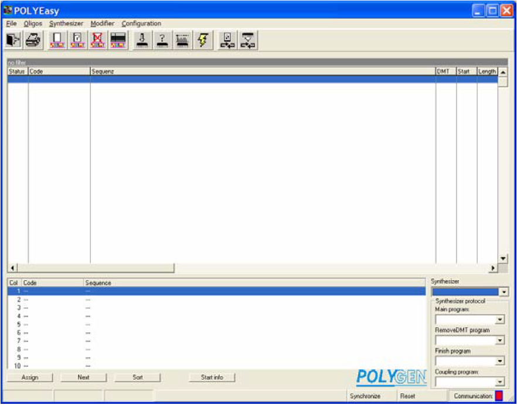
Toolbar. Below the menu is a toolbar with a set of iconized buttons representing commonly used commands which are also accessible from the menu interface.
Oligo Database. This is a panel (subwindow) organized as a table with six fields. The fields are:
PolyGen-10 Column Setup. Another panel (subwindow) organized in a tabular design with three fields:
Database-Synthesizer Linking. A set of four button controls at the bottom of the window.
Synthesizer Setup. A fieldset with a popup select list of defined synthesizers and their defined programs (Main, RemoveDMT, Finish, Coupling).
This section is intended as a quick guide and summary of Transgenomic WAVE® System 3500 Operator's Manual content.
Although there are many ways to purify chemically synthesized oligonucleotides from a synthesizer, perhaps among the best is an HPLC system for purification. Equivalent methods includes gel electrophoresis, but that method likely involves more loss during recovery as well as a greater insensitivity. Capillary electrophoresis might be a better system, although it is not well developed or routine.
This must be done as a routine.
Read the section on preparing the software (projects) in order to create new methods and handle data. After completing the steps above, perform the following in this order:
If the system will again be used within 3-4 days:
If the system will not be used for a longer period, follow these steps for long-term storage:
When you want to use the Transgenomics HPLC system, it is usually because of a project you have. It might be oligo purification in general, or if you are in the business of doing oligo purification, it might be for one person or customer. Organize your work into projects.
SerdarOligos—for a project in which the oligos of Serdar will be purified.
WaveMaker does not create project methods, which would be methods that
are of general use for a project. Instead it creates sample methods,
which it calls virtual methods.
That is a method is created for each
sample, and the method is named using a prefix (Method Prefix) whose
name is under the control of the user, and a three-digit number with leading
zeroes and starting with number 1. Methods are saved not as separate method
files but with the current project.
A new virtual
method is created whenever an Application Type under
the Sample tab is chosen (one of Mutation Detection, ds Single Fragment,
ds Multiple Fragment, Universal Linear, Quantitative RT-PCR, or Oligo
Purification).
To open an existing method, from File→Open Method..., navigate to the folder where the project file (type *.wmp) is located, and the method file (type *.emt) will be present. Methods can only be opened if they were previously saved using the File→Save Method command. Methods are saved by clicking on the sample row for the method to be saved.
Methods defined/created in the project can be viewed by selecting View→Methods. A View Method dialog box opens. Several parameters are defined in a method.
The sample table is a grid that looks much like a spreadsheet. Each row is a sample, and the key for the sample is the row number, which cannot be changed by the user. The columns (fields) of the table are as follows:
Sample <row number>unless the user defines it.
Certain button controls are found on the Sample Table tab. These are as follows:
Injections continue until a blank row is encountered. After the last method, pumps remaining running unless the Enable Stanndby option has been selected. (Transgenomics does not indicate, but a blank sample with a lower flow rate can be run to reduce flow rate.)
Calculating Maximum Injection Volume for 100 µL Syringe. When the syringe is 100 µl volume, some calculations must be done. Note the following constants:
It is necessary to set up project options using the Project→Project Options. The dialog box has several tabs, which are described below:
This HPLC system is designed to resolve oligonucleotides at multiple levels.
Its principal goal is to be a nucleic acid fragment analysis system.
In this respect, it can resolve oligonucleotides that differ because they
are polymorphisms, which can be nucleotides with equal length of bases, but
which differ chemically as to base composition and position of that base.
Transgenomic produces the separation (HPLC) columns that are used for different applications. The stationary phase is a nonporous matrix of polystyrene-divinylbenzene copolymer beads with linear C18 alkyl chains attached to the matrix to provide a reversed phase; the OLIGO SepPrep HC cartridge is an exception in that it has a porous beaded matrix. The matrix is supposed to not interact with the highly charged (anionic) polynucleotides.
In reversed phase chromatography, analytes interact more properly with an ion-pairing agent which in many cases is trifluoroacetic acid (TFA). But this depends on the nature of the analytes. For consistently and highly anionic molecules, a cationic ion-pairing agent is better. This is why triethylammonium acetate [TEAA: (CH3CH2)3N+H −OOCCH3]. The ion-pairing agent helps to reduce the surface charge density on analytes, creating a more hydrophobic character to the analyte, and allowing it to interact with the C18 alkyl chains.
The mobile phase for this chromatography is binary. The equilibration system is 0.1 M TEAA. To elute the polynucleotides (oligos), a solvent of 0.1 M TEAA containing 25% acetonitrile (MeCN) is increased in a linear gradient.
The table below shows in general the three modes of operation and their applications. This table is taken directly from the manual.
| Operation Mode | Temperature | Application | Principle of Separation |
|---|---|---|---|
| Non-denaturing | ~50° |
|
|
| Partially denaturing | 52-75° |
| both size and sequence dependence |
| Fully denaturing | 75-80° |
| both size and sequence dependence |
Non-denaturing. The column is run at elevated temperature but usually below a temperature where double-stranded oligonucleotides (15 bp or more) will denature to single-stranded DNA. The ability to separate on size is based 1% of the product size: thus a 100 bp oligo can be separated from a 101 bp oligo, and a 300 bp oligo can be separated from a 303 bp oligo. In the figure below is a chromatogram showing the size separation of oligos. The separation on agarose gel shows that oligos of 257 and 267 bp could not be resolved, but can be on HPLC.
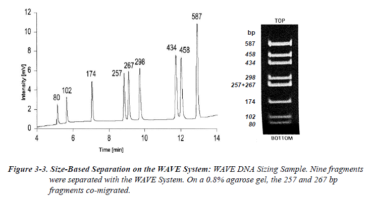
Partially Denaturing. This mode of operation is useful when doing a PCR analysis in which the amplicons might contain single nucleotide polymorphisms but are of equal size. If the sample is from a heterozygote, the amplicons should be two different molecules, one wild-type, the other a mutant, and present quantitatively in equal (1:1) ratios. If the mixture is denatured (95°) and then cooled, the amplicons will form homo- and heteroduplexes. In the case of analyzing for mutants that are homozygous, the DNA from a known wild-type must be mixed with the sample from the mutant in order to create a mix of hetero- and homoduplexes. Note in the figure below, the heating and cooling forms four types of double-stranded molecules, two heteroduplex and two homoduplex (the homoduplex molecules represent the original forms before heat denaturation, which can be re-formed on annealing).
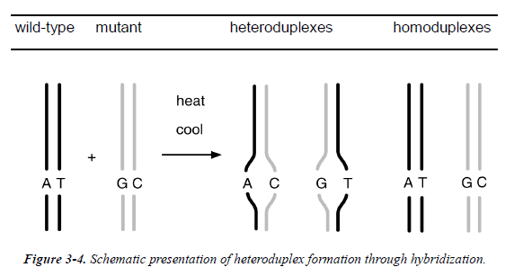
Heteroduplex DNA represents base mismatching, and such an oligonucleotide is less thermally stable compared to homoduplex DNA, where all bases of one strand properly match the complement strand. At the proper temperature, a heteroduplex will be partially denatured while the homoduplex is still fully annealed. This kind of difference enables the separation of these types of duplexes on a chromatography system. In the Transgenomic product line, the DNASep cartridge is the column of choice.
In the figure below are overlapped chromatograms with temperature increasing from 52°, which non-denaturing, up to 59°, which is partially denaturing. At nondenaturing conditions, all four duplex types have the same retention time, not being of different size. At partially denaturing conditions, all four forms are distinguished, ideally at 56°, which provides the greatest separation of the four forms. Note that at 55°, there are three forms: the first eluting two are the heteroduplexes, whereas the homoduplexes both remain undenatured and have the same retention time.
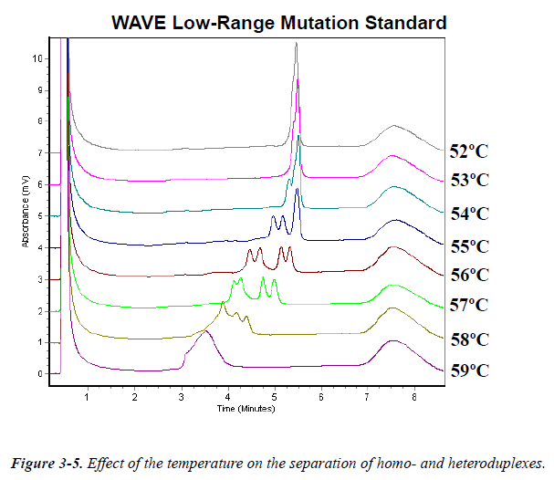
Other things to note:
Fully Denaturing. These conditions are used to check DNA and RNA of oligonucleotide size both for differences in sequence and in size. All strands are single-stranded (because conditions are fully denaturing). Applications include verifying analytically how well oligonucleotides were purified preparatively (possibly using Transgenomic system).
For creating a research or diagnostic test to find mutations or polymorphisms in a region of DNA that might be a gene or exons or translated sequence, there are a number of considerations to be made in designing the optimal detection system using HPLC conditions.
Amplicon Design. The Transgenomic Navigator software has a utility that can analyze a sequence in order to find the optimal amplicon that can be separated under HPLC conditions. The best amplicons will have a single melt domain: the helical fraction will go from 100% to 0% within a 5° interval. Fragments that multiple melt domains will generally take more than 5° to denature. They might require redesign with GC clamps, or the amplicon might need to be of smaller size.
Primer Design and Purity. After amplicon design is complete, then the correct primer pair is designed. Primers should not be closer than 30-50 bp from the sequence portion analyzed for mutations (e.g., an intron/exon boundary). They should be 18-30 bp long. GC content should be between 45-60%. The Tm difference between primer pairs should be < 2°. Primers should avoid self-complimentarity (hairpin loops). Complementarity between primers should be avoided (primer dimers). Primers with runs of 3 or more nucleotides of the same base. Avoid primers with non-templated tails, such as universal sequencing primers, M13 or T7 primers. In addition, primers should be pure, with no failed full-length shorter nucleotides contaminating the preparation.
Template Source and Purity. In general, the template DNA should be free of other classes of biomolecules. It should not contain high amounts of salts or other low MW materials. The best preparations are phenol-chloroform with back extractions using chloroform-isoamyl alcohol. If spin column with chaotropic salts are used, good ethanol precipitation should be the last step.
PCR Conditions. Transgenomic offers its own polymerase (Optimase) which is high fidelity; in any case, a high fidelity polymerase should be used. Other factors such as Mg2+, presence of inhibitors, annealing temperature, cycle times and temps, template and primer concentrations require optimization.
Factors Affecting Separation Cartridge Performance. The following materials or reagents or substances can cause loss of resolution or degradation of separation cartridges:
Also remove from the injection material high molecular weight stabilizers such as polyethylene glycol, or detergents present at levels > 1% such as Triton X100, NP40, Tween 20, SDS, and others. Injection of glycerol > 2%, DMSO > 10%, or betaine > 1.25 M should not be done.
In using the WAVE system, it is necessary to check that
are at least half full, capped and that solvent filter are placed at bottom of bottle. Prepare more of each of the solutions.
Check the waste bottles. Dispose of any material with full bottles appropriately. If you do not want to pour organic waste down the sink drain (a good idea), consider laying it out in a flat glass dish and letting it evaporate outside the laboratory under the hot sun and perhaps in a good wind. This is effective.
Degasser. There is a four-port degaasser used for degassing Buffers A and B, the Syringe Wash Solution, and the Active Clean Solution.
Interface. The D-7000 interface communicates between software on computer and with the system hardware modules. Pump. The WAVE system makes use of three of the four inlet lines (A, B, and D), with A and B lines being the binary HPLC gradient components. Make sure that line C is disconnected from the four-way valve and plug its port.
Chiller. Connected to the Autosampler, it maintains temperature between 4° and 60° C. Note that WAVE OLIGO Systems do not include a chiller.
Autosampler (with Injection Valve). Downstream of the pump mixed solvent is the Autosampler with inline injection valve. Samples are placed in 200 µl PCR conical tubes in a 2 × 96 or 2 × 384 well plate format. A PCR plate can be transferred from thermal cycler to WAVE System constant temperature rack for analysis.
Separation Cartridge + Oven. An in-line filter precedes the column. This travels to a pre-heat coil on the oven. Sample analysis is not done at < 40° usually.
The following are daily maintenance for the HPLC system:
The following are weekly maintenance for the HPLC system:
Every month:
Every THREE (3) months:
Every SIX (6) months:
Every year (TWELVE [12] months):
Quarterly Isopropanol Flush. Prepare a 25% solution of 2-propanol that is HPLC quality. Then do the following:
UTILITY
→ 3 (APL PARAM) → ENTER
→ 1 (WASH) → ENTER
→ 20 (NEEDLE WASH STROKES) → ENTER
→ 5 (NEEDLE WASH SPEED) → ENTER
→ 20 (INJ. PORT WASH STROKES) → ENTER
→ 5 (INJ. PORT WASH SPEED) → ENTER
→ 0 (PUMP PLUNGER WASH) → ENTER
To start, press WASH button.
Column maintenance. It is best to leave columns that are not used for only a few days in a 50 µl/min flow in 50% B in two-solvent system. If not to be used for more than four days, long term storage is to run in 75% MeCN at 0.9 ml/min at 50° for 15 min, the remove the column and end plug it.
| Part | Number | Comment |
|---|---|---|
| HPLC Parts | ||
| universal PM kit | SP2018 | contains diluter spring support bearing, UMWHPE filter, drain valve seal, diluter valve seal, drain valve seal, 4-way valve packing, drain valve filter packing, rheodyne build kit, injection port seals |
| solvent inlet filters | 530010 | filter, clear fitting, yellow ferrule (smaller end faces clear fitting,
larger end faces filter)
generally changed when slimy in feel or discolored; replaced every 3 months |
| PEEK fittings + ferrule | 280229 | |
| PEEK ferruled fitting (10-32) | 280248 | fingertight |
| PEEK ferrules | 282035 | fingertight |
| PEEK union | 280230 | black color |
| PEEK tubing, 5 ft (1.5 m) | SP5906 | |
| Polymide PEEK tubing, 7.5 ft (2.3 m) | SP5917 | |
| tubing, 0.007-inch i.d. (1.65 mm), PFA | 300190 | yellow color: connects inline mixer outlet to autosampler |
| tubing, 0.065-inch i.d. (1.65 mm), PFA | 280230 | tubing for detector outlet extension or the degasser |
| Pump | ||
| four-way valve packing | 500072 | checked every 6 months, replaced if necessary |
| plunger | 540086 | watch video for how to dis-assemble pump head, checked every 6 months along with pump seal check |
| plunger guide | 540090 | same as for plunger |
| pump seal | 542001 | UHMW PE piston seal (order two for complete set)
check every 6 months after taking apart pump head |
| drain valve seal | 500067 | Disassemble and check every 6 months |
| drain valve packing | 540089 | same as for drain valve seal |
| inlet and outlet check valves | 500096 (outlet) 500098 (inlet) | check every 12 months |
| flow path filter nuts and frits | check every 6 months | |
| single solenoid valve | 500064 | if needed |
| priming syringe | 540091 | plastic syringe and fitting to prime pump |
| Autosampler | ||
| injection valve (rotor) seal | 540118 | checked every 6 months and replaced every 12 months |
| injection valve isolation seal | 540117 | same as for rotor seal |
| injection port seal | 500068 | changed every six months |
| syringe valve seal | 500070 | changed every six months |
| spring support bearing | 450251 | checked every six months |
| syringe | 540088 | this is for the 0.5 ml kit, its transfer tubing: 300194
changed (usu. every 12 months) if leaking, corrosion or persistent air bubbles are observed; get transfer tubing only if changing syringe size |
| needle | 450205 | |
| needle sleeve | 450207 | |
| Column Oven | ||
| inline filter | 530011 | 0.5 µm, PEEK, this is the whole assembly (not usually necessary) |
| filter end fitting | 530016 | this part contains the filter, and is usually the only thing replaced |
| UV Detector | ||
| deuterium lamp | 070024 | usually replaced when energy falls below 150 or half its value when newly installed |
Single-stranded oligo separation is dependent on ion-pairing agent. With correct pairing agent, stationary phase becomes a dynamic anion exchanger. The DNASep® column hydrophobic properties are affected by count of -CH2- groups in alkyl chains of ion-pairing agent. Short alkyl chain pairing agents will emphasize the reversed-phase or hydrophobic nature of the column. Longer chains de-emphasize the column hydrophobicity and the mechanism of separation is more like anion-exchange. A triethylammonium pairing agent will reduce hydrophobicity partially and thus separation will be a function of length (size) and thus anionicity, but also base composition (bases provide hydrophobicity). A tetrabutylammonium pairing agent will more likely reduce the effect of base composition (base hydrophobicity) and so oligo separation is based only on anionic character, and thus oligo length (size).
Transgenomic has constructed HPLC system and methods for the analysis and purification of oligonucleotides, such as those produced synthetically by the PolyGen. Application Note 103 provides details of the chromatogrpahy for analysis and purification. For example, one method shows the size/length-separated oligos which are 14, 15, and 16 bases long. The LC program has total time of 20 min, although retention times are 16.36, 17.13, and 17.78 min for the 14-, 15-, and 16-mers respectively. Note that the 14, 15, and 16 mers have the same base sequence except for the 5′ bases. Thus the 14- and 15-mers represent n − 2 and n − 1, respectively, failures in synthesis and would be capped from extension. The LC chemistry uses a DNASep® column with a binary gradient with A = 25 mM tetrabutylammonium bromide (TBAB) and B = 25 mM TBAB + 50% MeCN. The program is from 10→60% B in 17 min, 60→100% B in 1 min, and 100-10% B in 1 min, finishing out. Detection is set at 260 nm and column temperature is 60°. Sample is injected in 5 µl.
Quality Verification of Commercially Obtained Oligo. This can be used to verify whether an oligo is purified as claimed. A 15-mer was analyzed using DNASep® column with temperature set at 80°, mobile phase A 0.1 M TEAA pH 7.3 and mobile phase B of A + 25% MeCN with intial 10% B and a gradient of 10→60% B over 17 min, 60→100% B over 1 min, and returning to 10% B over 1 min. Injection is 5 µl and detection at 260 nm. A retention time of 6.46 min is observed for the 15 mer under these conditions, and oligo was only 70% pure, with likely shorter length oligos as impurities.